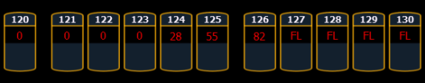

Subgroups can be used with the Fan feature. Channels in the same subgroup will act as a single channel when fanned.
For Example:
Group 1 is made up of channels 120 thru 130. Channels 120 thru 123 are one subgroup, channels 124 thru 126 are not in any subgroup, and channels 125 thru 130 are another subgroup.
Selects group 1 and puts it into fan mode. Rolling up the level wheel creates the following result. Channels 120 thru 123 share an intensity, channels 124 thru 126 each have different intensities, and channels 127 thru 130 share an intensity.
